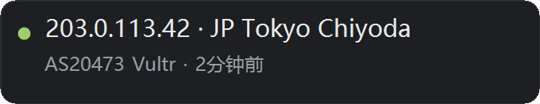
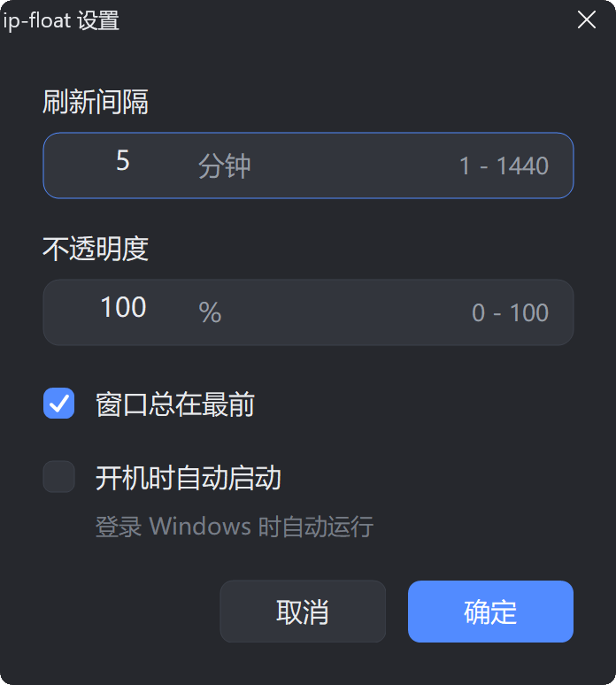

// 两行看清自己从哪个 IP、哪个机房出网 · Windows 原生单文件// Two lines that tell you which IP and which datacenter you egress from — one native Windows binary
单文件 exe（约 713 KB），双击即用 —— 不需要安装、不需要管理员权限。
Windows 首次运行可能提示安全警告，处理办法见仓库 README。
A single ~713 KB exe — double-click to run. No installer, no admin rights.
Windows may warn on first launch; the README covers the fix.
桌面应用没法在线试玩，所以先把界面原样摆出来 · 点击图片可放大A desktop app cannot be tried in a browser, so here is the interface as it actually renders · Click to enlarge

卡片本体 · 340 × 66 逻辑像素 · 图为 200% DPI 实拍（示例数据） The card itself · 340 × 66 logical pixels · captured at 200% DPI (sample data)

刷新间隔 1–1440 分钟、不透明度 0–100%、窗口总在最前、开机自启（写 HKCU\...\Run）。卡片拖到哪、透明度拉到多少，都会一起存进配置。Refresh interval from 1 to 1440 minutes, opacity from 0 to 100%, always-on-top, and run-at-login (written to HKCU\...\Run). Where you drag the card and how transparent you make it are saved too.
配置默认写在 %APPDATA%\ip-float\settings.ini；那个目录不可写时自动退到 exe 同目录，不会崩也不会丢设置。整个设置窗口的布局由字体度量推导、不硬编码像素，因此换语言、换 DPI 都不会把文字挤断。Settings live in %APPDATA%\ip-float\settings.ini; if that directory is not writable it falls back to the exe's own folder without crashing or losing your configuration. The dialog's layout is derived from font metrics rather than hard-coded pixels, so text never gets clipped across languages or DPI settings.
不透明度拉到 0 卡片会完全透明（还占着位置、点不到）——这时从托盘图标右键 →「设置…」改回来即可，退出和找回都不依赖卡片本身。Drag opacity to 0 and the card becomes fully invisible while still holding its place — recover it from the tray icon's right-click menu. Neither quitting nor recovering depends on the card being visible.
该一直看得见的信息，不该用开网页的方式去查Information that should always be visible should not require opening a browser tab
经常切代理、开远程机器、跑抓取脚本的人。出口 IP 和它落在哪个国家/机房，是排查问题和确认链路时最常要确认的一件事，但每次开浏览器去查都很烦。Anyone who switches proxies, remotes into machines or runs scraping jobs. Which IP you egress from — and which country or datacenter it belongs to — is the thing you check most often, yet looking it up in a browser every time is tedious.
信息要一直看得见，但不能碍事。所以做成无边框置顶卡片，而且点它不抢焦点——你正在打的字不会被打断，看完一眼就能继续。The information has to stay visible without getting in the way. Hence a borderless always-on-top card that never steals focus when clicked — a glance costs you nothing and your typing is never interrupted.
只调 Windows 自带库（gdiplus / winhttp / user32 / gdi32 / shell32 / kernel32），MinGW 静态链接，不依赖 Python / .NET / Node / VCRedist。拷到任何一台 Windows 上双击就能跑，不需要安装、不需要管理员。It only calls libraries Windows already ships (gdiplus, winhttp, user32, gdi32, shell32, kernel32), statically linked with MinGW — no Python, .NET, Node or VCRedist. Copy it to any Windows machine, double-click, done. No install, no admin rights.
一个足够小的工具，把该做对的细节都做对A deliberately small tool that still gets the details right
已经有一张卡片在跑时，再双击 exe 只会把已有卡片闪一下提示你它在哪，不会开出第二张，也不会悄悄占掉第二份内存。If a card is already running, double-clicking the exe just flashes the existing one to show you where it is — no duplicate window, no second copy quietly holding memory.
用 WS_EX_NOACTIVATE：点卡片、拖动它、右键菜单，都不会把你正在编辑的窗口切走。这是这类常驻小工具最容易被忽略、但最影响体感的一点。Via WS_EX_NOACTIVATE: clicking, dragging or opening the context menu never pulls focus away from the window you are typing in — the detail most always-on tools get wrong and the one you feel every day.
Per-Monitor V2 DPI 感知，100%–200% 都跟着缩放；把你把卡片拖到另一块缩放比例不同的屏幕上时，字体会重算而不是糊成一片。Per-Monitor V2 DPI awareness scales from 100% to 200%; drag the card onto a second monitor with a different scale factor and the text is recomputed instead of smeared.
双击托盘图标显示/隐藏；右键菜单含状态行（当前数据源与更新时间）、立即刷新、刷新间隔、设置、复制 IP、总在最前、开机自启、退出——并且会显示当前实际生效的配置文件路径。Double-click the tray icon to show or hide the card. The context menu carries a status line (current data source and update time), refresh now, interval presets, settings, copy IP, always-on-top, run at login and quit — and it shows the configuration path actually in effect.
绿点=数据正常，灰点=正在查询，橙点=上次刷新失败。不用读文字，扫一眼颜色就知道现在这份数字可不可信。Green means fresh data, grey means a query is in flight, amber means the last refresh failed — a glance at the colour tells you whether the number in front of you can be trusted.
每 N 分钟向 ipinfo.io / ipapi.co 各发一次请求，等于把出口 IP 报给第三方。介意就调大间隔，或用 --source 换成自建镜像——这一点写在文档里，而不是藏在隐私政策里。Every N minutes it queries ipinfo.io or ipapi.co, which means telling a third party your outbound IP. If that bothers you, raise the interval or point --source at your own mirror. This is stated in the README rather than buried in a privacy policy.
不静默、不甩错误码数字，直接告诉你下一步该做什么No silence, no bare error numbers — it tells you what to do next
网络请求失败时，卡片不会变成一个空白框：它保留上一次的结果、把状态点变橙，并在卡片上写明原因。WinHTTP 错误码和 HTTP 状态码都翻成了中文，并附上可操作的建议。 When a request fails the card does not turn into a blank box: it keeps the previous result, turns the status dot amber, and states the reason on the card. Both WinHTTP error codes and HTTP status codes are translated into plain language with actionable advice.
| 错误Error | 卡片上写什么What the Card Says |
|---|---|
12185 |
证书用途不匹配（常见于代理 / 中间人拦截）Certificate purpose mismatch — common with proxies or TLS interception |
12029 |
无法连接（端口不通、被墙，或该走代理）Cannot connect — port blocked, filtered, or a proxy is required |
429 |
请求太频繁，被数据源限流（调大间隔，或用 --source 换源）Rate limited by the data source — increase the interval or switch with --source |
403 |
被拒绝（数据源要 token，或你的出口 IP 被限流封禁）Rejected — the source wants a token, or your egress IP is blocked |
主源挂掉会自动换备源，右键菜单的状态行里能看到当前正在用哪个源。 If the primary source fails it switches to the fallback; the context menu's status line shows which one is in use.
没法在线试玩，但你可以不联网、不安装地先确认渲染是好的You cannot try it online, but you can confirm the rendering offline without installing anything
这是这个项目里我最满意的一个设计：exe 自带两个自检模式，用假数据渲染一张卡片或一张设置窗口截图。不联网、不受单实例限制，改完界面可以随时验证。 This is the part of the project I am happiest with: the exe ships two self-check modes that render the card, or the settings dialog, with sample data. No network, no single-instance restriction — the UI can be re-verified after any change.
ip-float.exe --demo --shot out.png # 用假数据渲染一张卡片自检图
ip-float.exe --demo --shot-dlg dlg.png # 给设置窗口拍一张自检图ip-float.exe --demo --shot out.png # render the card with sample data
ip-float.exe --demo --shot-dlg dlg.png # render the settings dialog两个 --shot 都不联网、且不受单实例限制；因为是 -mwindows 构建没有控制台，截图会在同名位置写一个 .log 报告成功与否。 Both --shot modes skip the network and bypass the single-instance check. Because it is an -mwindows build with no console, each one writes a same-named .log reporting success or failure.
一次刷新要走过的四步，全部在一个 1824 行的源文件里Four steps per refresh, all inside a single 1824-line source file
ipinfo.io/json
失败自动换 ipapi.coipinfo.io/json
falls back to ipapi.co
WinHTTP（schannel）
四阶段各 8 秒超时WinHTTP / schannel
8 s timeout per stage
手写 JSON 解析
1 MiB 响应上限Hand-written JSON
1 MiB response cap
GDI+ 双缓冲
半透明圆角卡片GDI+ double-buffered
translucent rounded card
为了守住"单文件零依赖"，解析器自己实现：正确处理 UTF-16 代理对（emoji、生僻字），非法 \uXXXX 原样回退而不是崩掉，并对响应体设了 1 MiB 上限防止跑飞。To keep the binary single-file and dependency-free the parser is written by hand: UTF-16 surrogate pairs (emoji, rare CJK) are combined correctly, malformed \uXXXX escapes degrade gracefully instead of crashing, and the response body is capped at 1 MiB so it cannot run away.
一个命名互斥体判定是否已有实例；已有实例时，新进程用 PostMessage 让旧卡片闪一下再退出，而不是弹一个"已经在运行"的对话框。A named mutex decides whether an instance already exists; if so, the new process uses PostMessage to make the existing card flash before exiting, rather than popping an "already running" dialog.
网络请求跑在独立线程，完成后把结果 PostMessage 回窗口线程；界面从不卡住。抓取途中又收到刷新请求会记一笔，抓完自动补一次，不会把请求静默吃掉。Requests run on a worker thread and post their result back to the window thread, so the UI never blocks. A refresh request that arrives mid-fetch is recorded and re-run afterwards rather than silently dropped.
极端情况（句柄耗尽等）导致 SetTimer 失败时，退回每分钟醒一次，并在卡片上写明"定时器异常，已退回 1 分钟"——而不是安静地再也不刷新。If SetTimer fails in an extreme case such as handle exhaustion, it falls back to a one-minute tick and says so on the card, instead of quietly never refreshing again.
-static -static-libgcc -static-libstdc++，只依赖 7 个 Windows 自带系统库。构建用 -Wall -Wextra 且要求零警告，编译失败即中断，不会留下半个产物。Built with -static -static-libgcc -static-libstdc++ against seven system libraries Windows already provides. The build uses -Wall -Wextra and is expected to be warning-free; a compile failure aborts instead of leaving a half-written artifact.
先在内存 DC 上完成整帧绘制再一次性 BitBlt，避免每次刷新时卡片闪一下。半透明、圆角、抗锯齿文字都在同一帧里完成。The whole frame is composed on a memory DC and blitted in one call, so the card never flickers on refresh. Transparency, rounded corners and anti-aliased text all happen within that one frame.
自研 exe 分发的真实门槛，也是这个项目里最花时间的一块The real cost of shipping your own exe — and the most time-consuming part of this project
自己编译的 exe 第一次双击往往要点两次才能运行。这里有两层互相独立的拦截，只解决一层，另一层会立刻顶上来，表现为"弹窗换了个样子"，很容易误以为方法无效。 A freshly built exe usually takes two clicks to run. There are two independent interceptors here; fixing only one makes the other appear immediately, which looks like your fix did not work at all.
「Windows 已保护你的电脑」。按文件哈希做云端信誉判定：刚编译出来的 exe 微软服务器从没见过，所以每次重编（哈希变了）都会拦。关键在于——这一层自签名挡不住。"Windows protected your PC." Reputation is judged by file hash, so a freshly built exe has never been seen by Microsoft's servers and is blocked every time the hash changes. Crucially, a self-signed certificate does nothing here.
「打开文件 - 安全警告 · 无法验证发布者」。这是另一套机制，而它认本机信任的证书：自签名证书装进 CurrentUser\Root 之后，「发行商」就从"未知发布者"变成证书主体，警告随之消失。"Open File — Security Warning: the publisher could not be verified." This is a different system, and it does trust locally installed certificates: once a self-signed cert is in CurrentUser\Root, the publisher stops reading "Unknown Publisher" and the warning goes away.
两者恰好相反：自签名对附件管理器有效、对 SmartScreen 无效。 They are exact opposites: a self-signed certificate works for the Attachment Manager and does nothing for SmartScreen.
| 试过的做法What Was Tried | 为什么没用Why It Did Nothing |
|---|---|
只清 MOTW（Unblock-File）Clearing MOTW only (Unblock-File) |
这个 exe 本来就没有 Zone.Identifier，此弹窗不是 MOTW 触发的The exe never had a Zone.Identifier stream — this dialog is not MOTW-driven |
| 加 Defender 排除项Defender exclusions (folder or exe) | 与 SmartScreen、附件管理器都是彼此独立的机制Independent of both SmartScreen and the Attachment Manager |
改 Policies\...\Defender\SmartScreenEditing Policies\...\Defender\SmartScreen |
改错键了——那是 Defender / Edge 的策略，对这个弹窗无效Wrong key entirely — that is the Defender/Edge policy and does not affect this dialog |
| 改完注册表不重启资源管理器Not restarting Explorer after the registry change | LowRiskFileTypes 是策略值，Explorer 只在启动时读一次LowRiskFileTypes is a policy read by Explorer only at startup |
| 反复重编 exeRebuilding the exe repeatedly | 每重编一次哈希就变一次，SmartScreen 那层的信誉归零Every rebuild changes the hash and resets SmartScreen reputation to zero |
完整的处置步骤（含注册表位置、界面路径和"必须重启资源管理器"这一步的说明）都写在了仓库 README 里，构建脚本在编译完成后会自动重新签名。 The complete fix — registry locations, UI paths and why restarting Explorer is mandatory — is documented in the repository README, and the build script re-signs the binary automatically after compiling.
独立完成全部 C++ / Win32 实现（WinHTTP 抓取与主备源轮换、手写 JSON 解析、GDI+ 半透明渲染、托盘与右键菜单、字体度量驱动的设置窗口、Per-Monitor DPI 适配），以及构建、自签名与分发链路和踩坑文档。 Independently implemented the entire C++/Win32 application — WinHTTP fetching with source fallback, the hand-written JSON parser, GDI+ translucent rendering, the tray icon and context menu, the font-metrics-driven settings dialog and Per-Monitor DPI handling — plus the build, self-signing and distribution pipeline and the troubleshooting documentation.